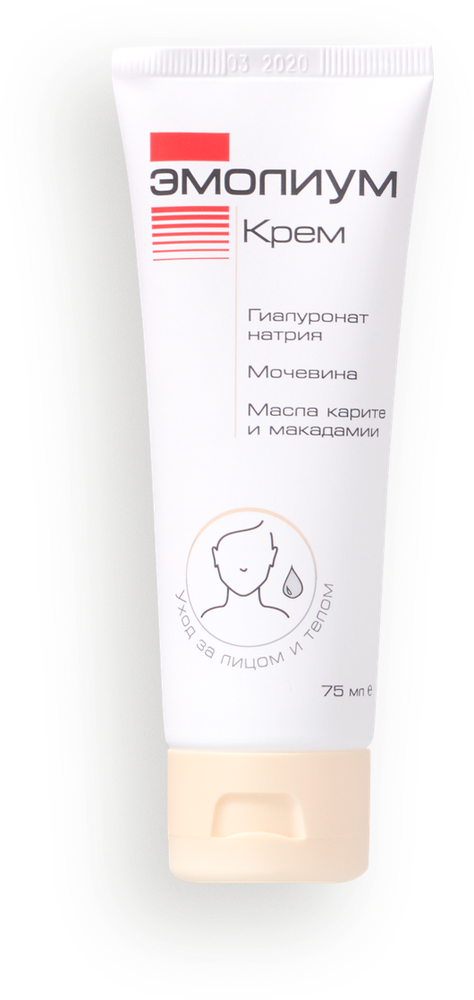
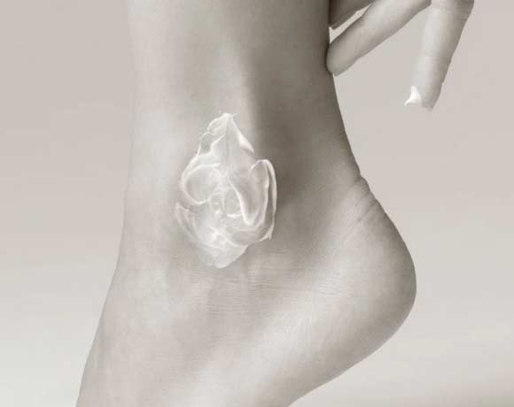
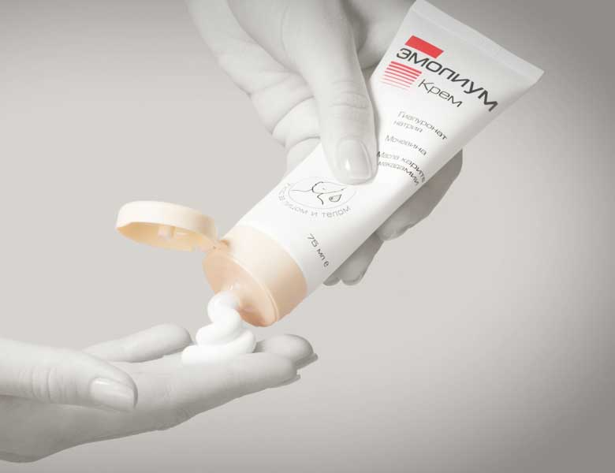
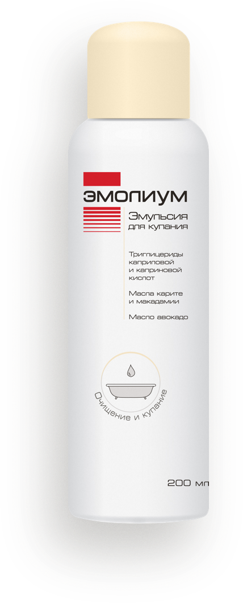
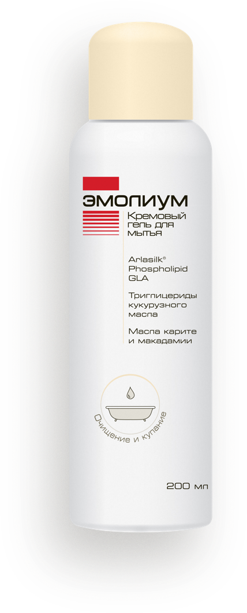
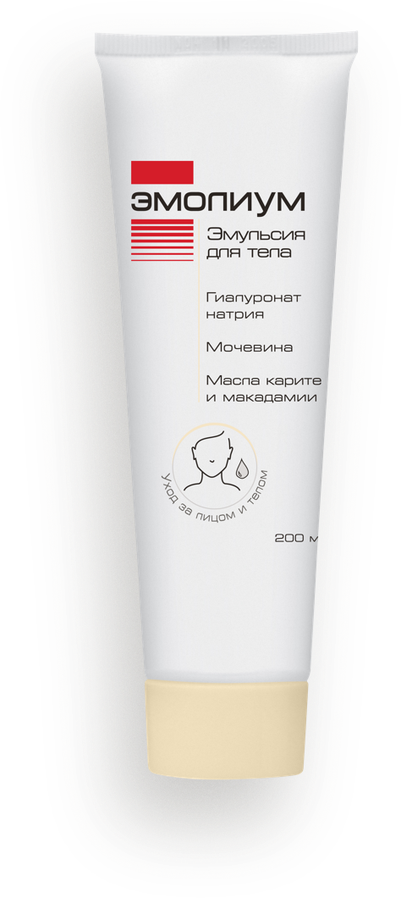
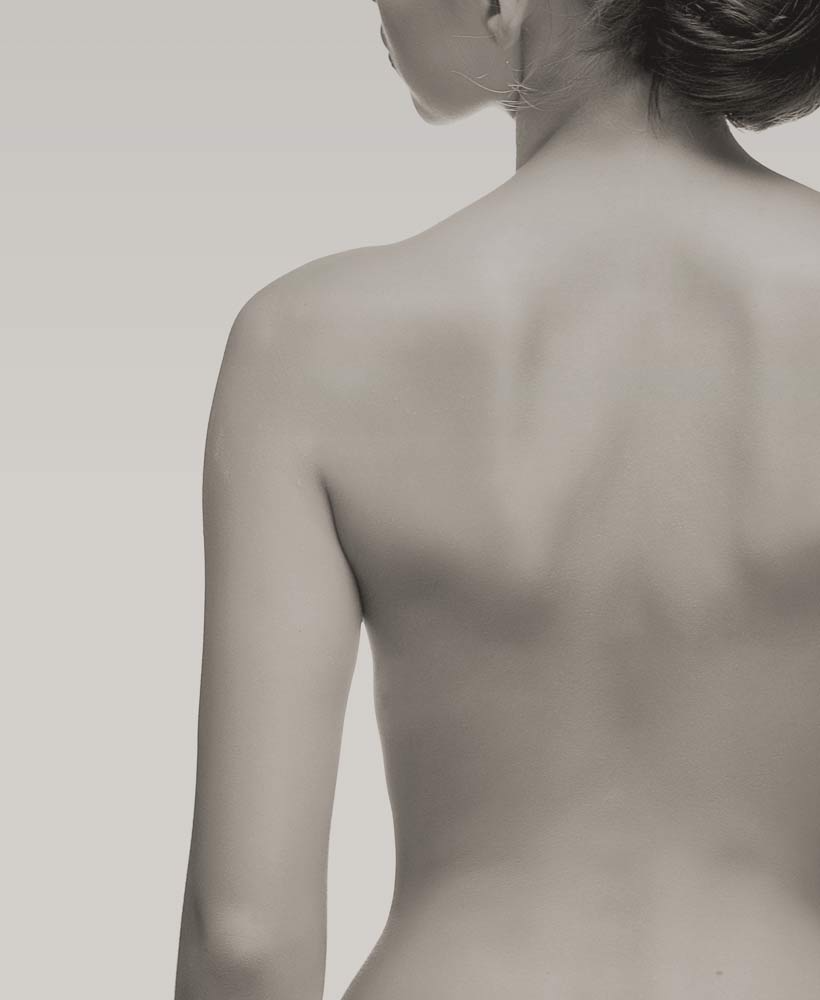
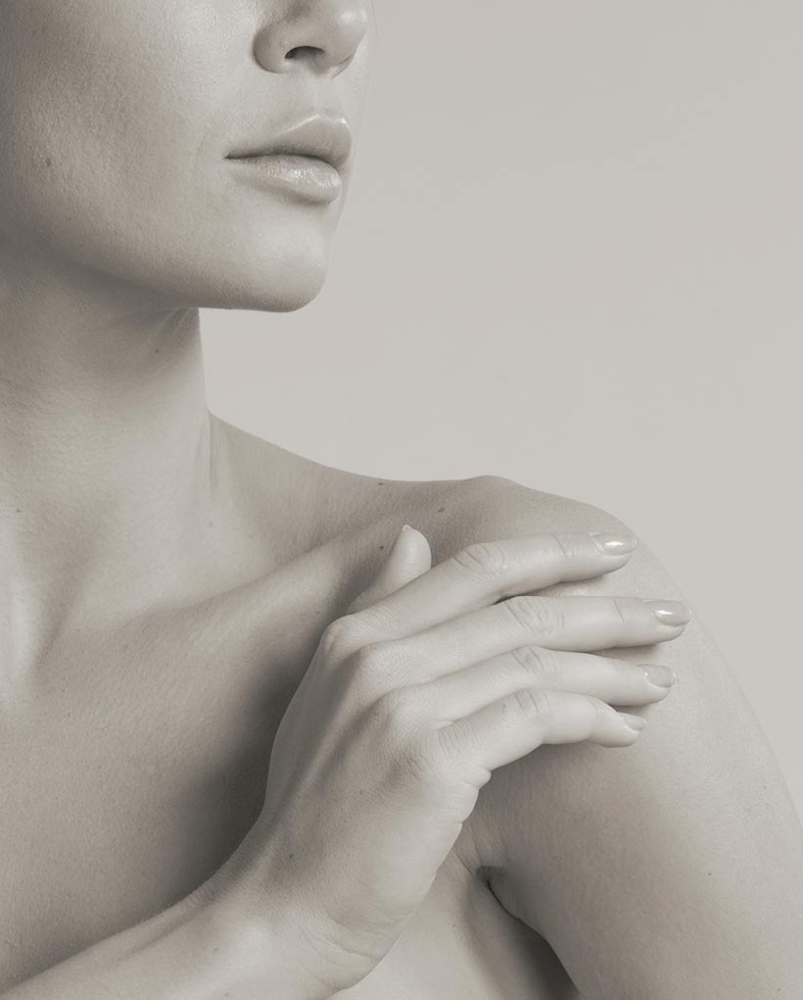
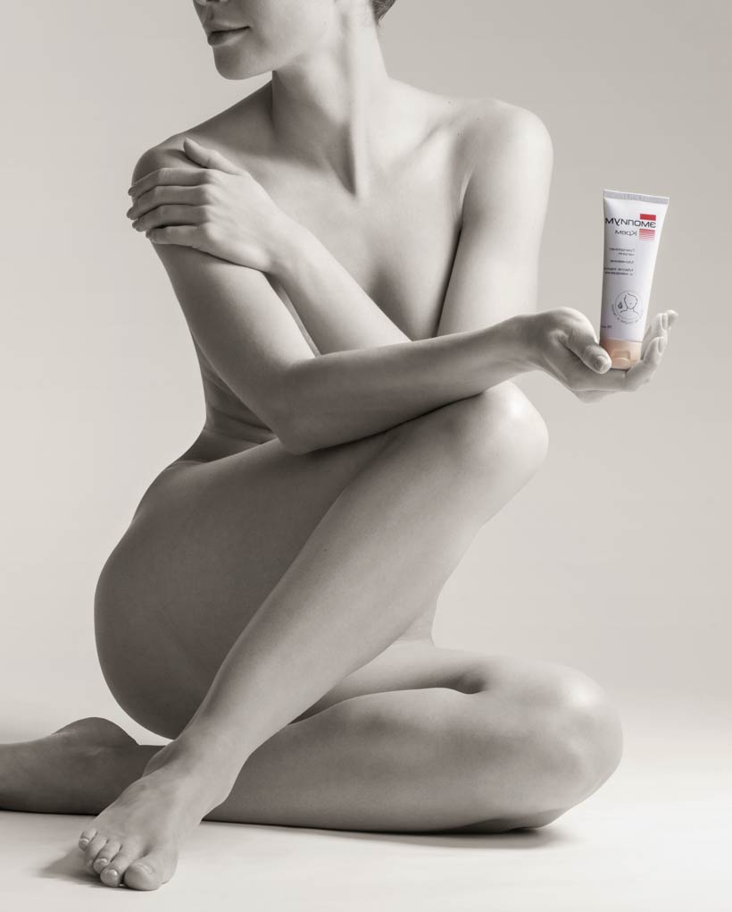
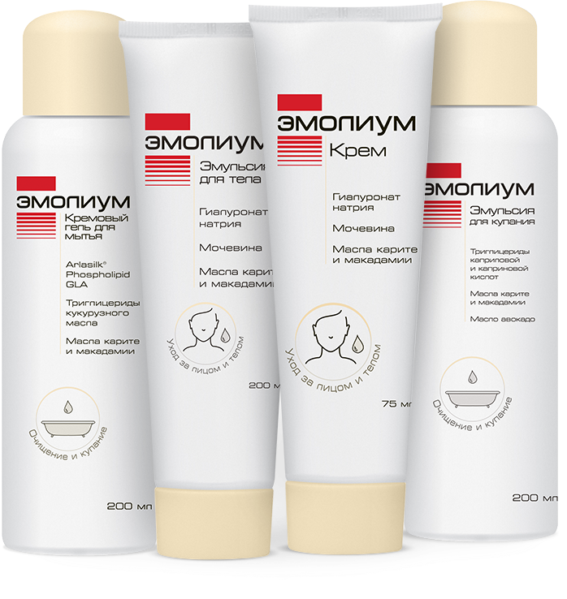

Подходит с первых дней жизни

Крем Эмолиум
Базовая серия
----------
Комплексный эмолент обеспечивает увлажнение на поверхности и в глубоких слоях эпидермиса, восстанавливает
защитный липидный слой кожи.
Подходит для ежедневного ухода за сухой и чувствительной кожей детей и взрослых, в том числе для питания и
увлажнения в период ремиссии хронических заболеваний — атопического дерматита, себореи, псориаза и других.
Где купить?
Гиалуронат натрия (1%) — соль гиалуроновой кислоты, помогает удерживать влагу в
коже.
Мочевина (3%) — компонент натурального увлажняющего фактора кожи, обеспечивает
увлажнение глубоких слоев эпидермиса.
Масло карите (4%) и макадамии (3%) — природные компоненты, способствуют
восстановлению защитной липидной пленки, предотвращая излишнюю потерю влаги, смягчают и придают коже
эластичность.
Триглицерины каприловой и каприновой кислот (4%) — восполняют нехватку
межклеточных липидов в толще эпидермиса и ограничивают потерю воды из внутренних слоев кожи.
Ежедневный уход
за сухой и чувствительной
кожей взрослых, детей
и новорожденных.
Крем Emolium используют при сухости
и ассоциированных с ней заболеваниях
у детей с рождения и у взрослых, в том числе
при атопическом дерматите, псориазе,
себорее и др. Возможность его применения
среди разных групп пациентов показана
как практическими исследованиями, так
и основываясь на отзывах пользователей.

Крем оптимален для локального нанесения:
руки, локти, щеки и других участков кожи.
Крем Эмолиум можно использовать в комплексе
с другими средствами для очищения кожи.

Достаточное количество крема выдавить из тюбика.
Мягкими, не втирающими и не похлопывающими движениями
нанести тонкий слой крема на очищенную кожу. Слой крема
должен быть равномерным, не толстым и покрывать все участки.
Наилучший результат можно достичь, применяя крем как минимум 2 раза в день
Другие средства Базовой серии Эмолиум




Функции кожи
Одна из функций кожи — защита организма от внешних вредных факторов: солнечных лучей, тепла, холода,
повышенной влажности или сухости воздуха, слишком активных или неправильно подобранных моющих средств и
средств для ухода, дыма,
инфекций. Когда таких повреждающих факторов много, то кожа
не успевает восстанавливаться, уменьшается содержание влаги
и липидов в ее клетках и межклеточном пространстве.
Кроме защитной кожа человека выполняет и другие функции:
- Дыхательную. Кожа участвует в процессе газообмена, поглощая кислород и выделяя углекислый газ.
- Регуляции температурного обмена: потение, отведение тепла, защита от холода.
- Функцию водно-солевого обмена за счет выведения пота.
- Выделительную или экскреторную — через кожу с потом выделяются продукты минерального, белкового обмена, некоторые лекарства.
- Депонирующую — создание депо крови в сосудах кожи.
- Синтеза и метаболизма, например, выработки витамина D, пигментов.
- Рецепторную: тактильная, температурная, болевая чувствительность.
- Иммунную: сопротивление внешним факторам.
Причины возникновения сухости кожи
Заболевания или сбои в работе организма могут приводить к нарушениям функций кожи. Это выражается разными
симптомами и один из них — сухость кожи.
Сухая кожа может сопровождаться следующими проявлениями:
- Шелушением;
- Огрублением внешнего вида кожи;
- Появлением серого или желтоватого оттенка;
- Зудом;
- Раздражением;
- Появлением утолщенных или, наоборот, истонченных участков;
- Повышением чувствительности к механическим (прикосновения, трение) или физическим факторам (влажность, переохлаждение, перегревание и т. п.).


Появление этих симптомов связано с нарушениями многих процессов во всех слоях кожи: уменьшением содержания
липидов, снижением эластичности, обезвоживанием в роговом слое кожи, истончением защитного слоя
(водно-липидной мантии) из-за дисфункции сальных и потовых желез и другими изменениями.
Средства уменьшения сухости кожи при различных заболеваниях
Поскольку изменения при сухости кожи затрагивают все слои эпидермиса и являются многофакторными, нужно
воздействовать не только на один какой-то воспалительный или повреждающий момент, например, повышать
содержание жирных компонентов
с помощью косметических кремов. Важно также, чтобы средство влияло на как можно большее количество причин
развития сухости кожи.
Современная дерматология рекомендует использовать для этого эмоленты — средства комплексного воздействия
сразу на многие факторы возникновения сухости, раздражения, ксероза
Эмолиум — косметическая
линейка дерматологических
эмолентов, обеспечивающих
поддержание функций кожи
при сухости и ее комплексное
восстановление.
Предотвращение потерь влаги с поверхности кожи, то есть пассивное или окклюзивное увлажнение.
Восполнение содержания в коже веществ, аналогичных натуральным факторам увлажнения — активное увлажнение.
Поддержка и стимуляция работы нарушенных функций эпидермиса, в том числе факторов влажности.
Восстановление обменных, метаболических, окислительно-восстановительных процессов в коже.
Как показали отечественные и зарубежные исследования, регулярное применение косметических средств линейки
Эмолиум снижает выраженность симптомов, связанных
с сухостью кожи, в том числе при атопическом дерматите.
Одно из таких средств — Эмолиум Крем Базовой Серии. Это комплексный эмолент, который обеспечивает увлажнение
на поверхности и в глубоких слоях эпидермиса, восстанавливает защитный липидный слой кожи. Также подходит для
питания и увлажнения в период ремиссии хронических заболеваний — атопического дерматита, себореи, псориаза и
других.
Также вы можете узнать больше о других средствах Базовой серии Эмолиум.

Список источников
- Быков В.Л. Глава 4. Кожа и её производные /Частная гистология человека. — СПб.: Сотис, 2001. — С. 56 — 70. — 304 с.
- Базисная терапия атопического дерматита в клинических рекомендациях разных стран / Российское общество дерматовенерологов и косметологов.
- Жукова О. «Все кожные заболевания существенно влияют на качество жизни пациентов» / Журнал «Ремедиум», №6.— 2016. — С. 33 — 35.
- Одинаева Н.Д., Яцык Г.В., Беляева И.А. / Коррекция сухости кожи у новорожденных детей. /Педиатрия. — 2011; — Том 90 № 2: 75-79
- Н.Н. Мурашкин, Э.Т. Амбарчян, Р.В. Епишев, А.И. Материкин /Барьерные свойства кожи в норме и патологии /ФГБУ НЦЗД МЗ РФ, Москва, РФ — 2015.
- Н.М. Ненашева /Современная терапия атопического дерматита: роль эмолентов и антигистаминных препаратов / Журнал «Эффективная Фармакотерапия. Аллергология и иммунология» №1 (6) — 2016. — С. 3 — 13
- Текучева Л.В., Знаменская Л.Ф. / Фармакотерапия в дерматовенерологии /Опыт применения наружных средств косметической линии Эмолиум в комплексной терапии детей, больных атопическим дерматитом / Электронный ресурс — Режим доступа: м Дата: 02. 10. 2017
- Базовая серия / Электронный ресурс — Режим доступа: https://www.emolium.ru/products/bazovaya-seriya/ Дата: 03. 10. 2017